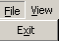
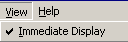
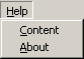

The Index Correction Utility pull-down menus are:
The File menu contains the Exit menu item that enables you to exit the program.

The View menu contains the Immediate Display menu item that enables the system to automatically display document images.

The Help menu provides access to online help and program version and copyright information.
